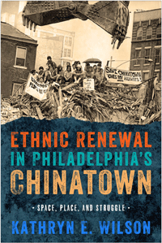

How Philadelphia’s Chinatown resisted and engaged with urban renewal processes in the late twentieth century
How Philadelphia’s Chinatown resisted and engaged with urban renewal processes in the late twentieth century


 How Philadelphia’s Chinatown resisted and engaged with urban renewal processes in the late twentieth century
How Philadelphia’s Chinatown resisted and engaged with urban renewal processes in the late twentieth century

|  |
Ethnic Renewal in Philadelphia's ChinatownSpace, Place, and StruggleKathryn E. Wilsonpaper EAN: 978-1-43991-215-7 (ISBN: 1-4399-1215-7) |
"As the first book about Philadelphia’s Chinatown, Wilson’s study is valuable for drawing our attention to the exploits of a cadre of community activists and public figures who helped defend against redevelopment in the 1970s and mount challenges to urban renewal in the following decades. Her narrative resonates with ethnographic richness, especially through her use of first-person oral histories and exceptional visual documentation. Ethnic Renewal in Philadelphia’s Chinatown also reveals flash points of conflict and collaboration among activists and organizations in preserving the past while planning for the urban future."
—Jan Lin, Professor of Sociology, Occidental College, and author of Reconstructing Chinatown: Ethnic Enclave, Global Change
Philadelphia’s Chinatown, like many urban chinatowns, began in the late nineteenth century as a refuge for immigrant laborers and merchants in which to form a community to raise families and conduct business. But this enclave for expression, identity, and community is also the embodiment of historical legacies and personal and collective memories.
In Ethnic Renewal in Philadelphia’s Chinatown, Kathryn Wilson charts the unique history of this neighborhood. After 1945, a new generation of families began to shape Chinatown’s future. As plans for urban renewal—ranging from a cross-town expressway and commuter rail in the 1960s to a downtown baseball stadium in 2000—were proposed and developed, “Save Chinatown” activists rose up and fought for social justice.
Wilson chronicles the community’s efforts to save and renew itself through urban planning, territorial claims, and culturally specific rebuilding. She shows how these efforts led to Chinatown’s growth and its continued ability to serve as a living community for subsequent waves of new immigration.
Excerpt available at www.temple.edu/tempress
"This valuable social history highlights the people, organizations, and issues that galvanized a renaissance in Philadelphia’s historic Chinatown during and after the 1960s. Drawing on archives and interviews...historian Wilson develops a clear narrative of issues and responses that changed a bachelor settlement of the 19th century into a mixed and vital community near the heart of Center City today.... Accessible and clear with vivid discussions of key conflicts, this book will be of interest across classes in ethnic and urban studies, illuminating the many actors involved in contemporary gentrification, tourism, and urban identities. Summing Up: Highly recommended."
—CHOICE
"Wilson has made a valuable contribution by providing the first (and long overdue) book-length account of the history and ongoing struggles of Philadelphia’s Chinatown, a neighborhood whose significance to historical debates and developments far outweighs its physical size and population.... [She] has done an admirable job capturing the diverse and frequently marginalized, distorted, and silenced voices that have advocated for the interests of Chinatown dating back to the 1870s.... Ethnic Renewal in Philadelphia’s Chinatown updates and deepens prior histories of Chinatowns.... It should be required reading not only for those interested in a richer view of Asian American history but also those who recognize the need to situate Asian American communities within the broader study of how race, class, and social movements relate to the production of urban space."
—American Historical Review
"Beyond its descriptive discussions and lively historical documents, the book is one of the first efforts to systematically conceptualize 'ethnic renewal.'... This book enhances and complicates the understanding of spatial justice that applies to other marginalized urban space.... Wilson's book is timely.... [It] provides a toolkit for urban planners, activists, community organizations, and city governments, not only for Chinatowns, but also for other ethnic and minority communities."
—The Pennsylvania Magazine of History and Biography
"Wilson’s thorough study of Philadelphia’s Chinatown looks beyond the restaurants catering to tourists to uncover the dynamic history of this 'living community.'... Wilson’s coherent organization and clarity of style make for enjoyable reading. The book is an important addition to the growing scholarship that documents the community histories of Asian America. Wilson’s book is especially significant as a counternarrative that reveals a legacy of activism in the
face of a history of marginalization and segregation."
—Journal of American History
List of Figures and Tables
Preface
Acknowledgments
Introduction: Imagining Chinatown
1. Claiming Space, Creating Chinatown, 1870–1940
2. "Chinatown was the safe space”: Community, Memory, and Place, 1940–1980
3. “We want homes, not highways”: Urban Renewal and the “Save Chinatown” Movement
4. “Be part of progress, not its sacrificial lamb”: Community-Development Strategies, 1970–2000
5. “A legacy of resistance”: Chinatown North and Twenty-First-Century Challenges
6. “We are the ones who should be telling the story”: Representing Chinatown
Epilogue: “Is, was, and will be Chinatown”
Appendix: Chinatown Populations
Notes
Index
Kathryn E. Wilson is Associate Professor of History at Georgia State University.
Philadelphia Region
History
Asian American Studies
Urban Life, Landscape, and Policy, edited by Zane L. Miller, David Stradling, and Larry Bennett.
Urban Life, Landscape, and Policy Series, edited by Zane L. Miller, David Stradling, and Larry Bennett, features books that examine past and contemporary cities, focusing on cultural and social issues. The editors seek proposals that analyze processes of urban change relevant to the future of cities and their metropolitan regions, and that examine urban and regional planning, environmental issues, and urban policy studies, thus contributing to ongoing debates.
© 2016 Temple University. All Rights Reserved. This page: http://www.temple.edu/tempress/titles/2349_reg.html.